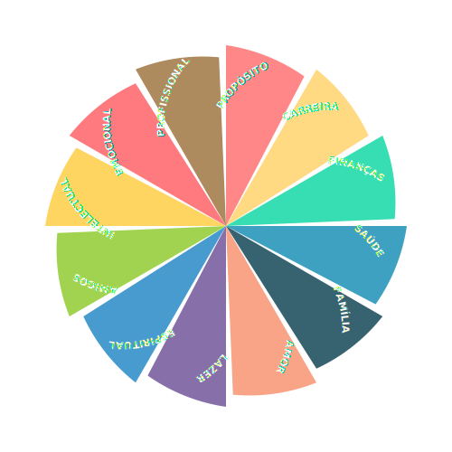

Sua energia parece dividida entre mil direções?
Carreira, finanças, saúde, relacionamentos, propósito... Cuidar de tudo ao mesmo tempo parece uma corrida sem fim. Mas e se o segredo não for correr mais rápido, mas sim caminhar com mais clareza? E se, para avançar, o primeiro passo for uma pausa?
Oasis é o seu guia pessoal para uma vida intencional.
Unindo a sabedoria da Roda da Vida com a gentileza da inteligência artificial, nosso app te ajuda a entender o que realmente importa e a dar um passo de cada vez. Sem pressão, sem julgamento. Apenas clareza e apoio.
- Reflita com a sua Roda da Vida.
- Planeje com uma IA aliada.
- Cresça com uma comunidade que te apoia.

A jornada para o equilíbrio começa com o primeiro passo.
Junte-se à comunidade de pioneiros. Deixe seu e-mail para ser um dos primeiros a receber o acesso e começar a sua jornada com mais serenidade e propósito.